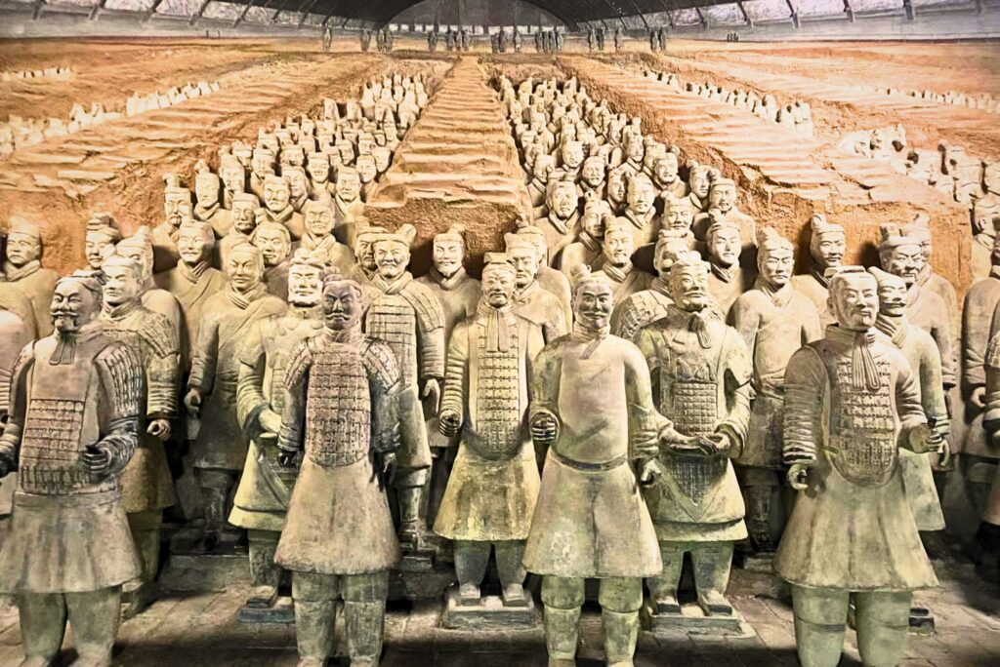

← Back to Asia
China
Explore three historic landmarks from China.
Great Wall of China
Northern China
Stretching across rugged mountain ridges for over 21,000 kilometers, the wall was built and linked across dynasties to defend northern borders. Soldiers, peasants, and prisoners labored along its watchtowers, turning a military barrier into an emblem of Chinese endurance.
The Forbidden City
Beijing
This 980-building complex served as the imperial palace for 24 Ming and Qing emperors from 1420 to 1912. Behind its crimson walls, court scholars, eunuchs, and rulers shaped Chinese statecraft, art, and philosophy.

Terracotta Army
Xi’an
Buried in 210 BC to guard China’s first emperor, Qin Shi Huang, in the afterlife, over 8,000 life-sized clay soldiers, horses, and chariots remained hidden until farmers discovered them in 1974. Each warrior carries unique facial features modeled after real imperial troops.